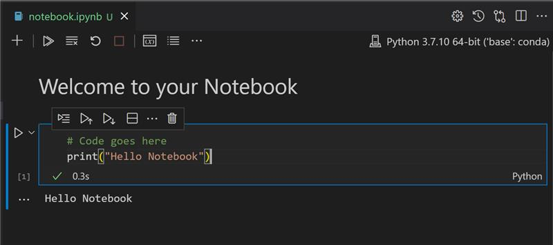
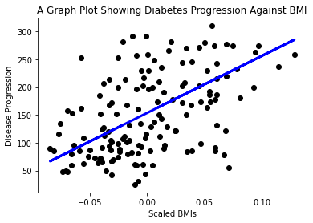

开始使用 Python 和 Scikit 学习回归模型⚓︎

作者 Tomomi Imura
课前测⚓︎
介绍⚓︎
在这四节课中，你将了解如何构建回归模型。我们将很快讨论这些是什么。但在你做任何事情之前，请确保你有合适的工具来开始这个过程！
在本课中，你将学习如何：
- 为本地机器学习任务配置你的计算机。
- 使用 Jupyter notebooks。
- 使用 Scikit-learn，包括安装。
- 通过动手练习探索线性回归。
安装和配置⚓︎

🎥 单击上图观看视频：在 VS Code 中使用 Python。
- 安装 Python。确保你的计算机上安装了 Python。你将在许多数据科学和机器学习任务中使用 Python。大多数计算机系统已经安装了 Python。也有一些有用的 Python 编码包 可用于简化某些用户的设置。
然而，Python 的某些用法需要一个版本的软件，而其他用法则需要另一个不同的版本。 因此，在 虚拟环境 中工作很有用。
- 安装 Visual Studio Code。确保你的计算机上安装了 Visual Studio Code。按照这些说明 安装 Visual Studio Code 进行基本安装。在本课程中，你将在 Visual Studio Code 中使用 Python，因此你可能想复习如何 配置 Visual Studio Code 用于 Python 开发。
通过学习这一系列的 学习模块 熟悉 Python
-
按照 这些说明 安装 Scikit learn。由于你需要确保使用 Python3，因此建议你使用虚拟环境。注意，如果你是在 M1 Mac 上安装这个库，在上面链接的页面上有特别的说明。
-
安装 Jupyter Notebook。你需要 安装 Jupyter 包。
你的 ML 工作环境⚓︎
你将使用 notebooks 开发 Python 代码并创建机器学习模型。这种类型的文件是数据科学家的常用工具，可以通过后缀或扩展名 .ipynb 来识别它们。
Notebooks 是一个交互式环境，允许开发人员编写代码并添加注释并围绕代码编写文档，这对于实验或面向研究的项目非常有帮助。
练习 - 使用 notebook⚓︎
-
在 Visual Studio Code 中打开 notebook.ipynb。
Jupyter 服务器将以 python3+启动。你会发现 notebook 可以“运行”的区域、代码块。你可以通过选择看起来像播放按钮的图标来运行代码块。
-
选择
md图标并添加一点 markdown，输入文字 # Welcome to your notebook。
接下来，添加一些 Python 代码。
-
在代码块中输入 print("hello notebook")。
-
选择箭头运行代码。
你应该看到打印的语句：
hello notebook

你可以为你的代码添加注释，以便 notebook 可以自描述。
✅ 想一想 web 开发人员的工作环境与数据科学家的工作环境有多大的不同。
启动并运行 Scikit-learn⚓︎
现在 Python 已在你的本地环境中设置好，并且你对 Jupyter notebook 感到满意，让我们同样熟悉 Scikit-learn（在“science”中发音为“sci”）。 Scikit-learn 提供了 大量的 API 来帮助你执行 ML 任务。
根据他们的 网站，“Scikit-learn 是一个开源机器学习库，支持有监督和无监督学习。它还提供了各种模型拟合工具、数据预处理、模型选择和评估以及许多其他实用程序。”
在本课程中，你将使用 Scikit-learn 和其他工具来构建机器学习模型，以执行我们所谓的“传统机器学习”任务。我们特意避免了神经网络和深度学习，因为它们在我们即将推出的“面向初学者的人工智能”课程中得到了更好的介绍。
Scikit-learn 使构建模型和评估它们的使用变得简单。它主要侧重于使用数字数据，并包含几个现成的数据集用作学习工具。它还包括供学生尝试的预建模型。让我们探索加载预先打包的数据和使用内置的 estimator first ML 模型和 Scikit-learn 以及一些基本数据的过程。
练习 - 你的第一个 Scikit-learn notebook⚓︎
本教程的灵感来自 Scikit-learn 网站上的 线性回归示例。
在与本课程相关的 notebook.ipynb 文件中，通过点击“垃圾桶”图标清除所有单元格。
在本节中，你将使用一个关于糖尿病的小数据集，该数据集内置于 Scikit-learn 中以用于学习目的。想象一下，你想为糖尿病患者测试一种治疗方法。机器学习模型可能会帮助你根据变量组合确定哪些患者对治疗反应更好。即使是非常基本的回归模型，在可视化时，也可能会显示有助于组织理论临床试验的变量信息。
✅ 回归方法有很多种，你选择哪一种取决于你正在寻找的答案。如果你想预测给定年龄的人的可能身高，你可以使用线性回归，因为你正在寻找数值。如果你有兴趣了解某种菜肴是否应被视为素食主义者，那么你正在寻找类别分配，以便使用逻辑回归。稍后你将了解有关逻辑回归的更多信息。想一想你可以对数据提出的一些问题，以及这些方法中的哪一个更合适。
让我们开始这项任务。
导入库⚓︎
对于此任务，我们将导入一些库：
- matplotlib。这是一个有用的 绘图工具，我们将使用它来创建线图。
- numpy。 numpy 是一个有用的库，用于在 Python 中处理数字数据。
- sklearn。这是 Scikit-learn 库。
导入一些库来帮助你完成任务。
-
通过输入以下代码添加导入：
python import matplotlib.pyplot as plt import numpy as np from sklearn import datasets, linear_model, model_selection在上面的代码中，你正在导入
matplottlib、numpy，你正在从sklearn导入datasets、linear_model和model_selection。model_selection用于将数据拆分为训练集和测试集。
糖尿病数据集⚓︎
内置的 糖尿病数据集 包含 442 个围绕糖尿病的数据样本，具有 10 个特征变量，其中包括：
- age：岁数
- bmi：体重指数
- bp：平均血压
- s1 tc：T 细胞（一种白细胞）
✅ 该数据集包括“性别”的概念，作为对糖尿病研究很重要的特征变量。许多医学数据集包括这种类型的二元分类。想一想诸如此类的分类如何将人群的某些部分排除在治疗之外。
现在，加载 X 和 y 数据。
🎓 请记住，这是监督学习，我们需要一个命名为“y”的目标。
在新的代码单元中，通过调用 load_diabetes() 加载糖尿病数据集。输入 return_X_y=True 表示 X 将是一个数据矩阵，而y将是回归目标。
-
添加一些打印命令来显示数据矩阵的形状及其第一个元素：
X, y = datasets.load_diabetes(return_X_y=True) print(X.shape) print(X[0])作为响应返回的是一个元组。你正在做的是将元组的前两个值分别分配给
X和y。了解更多 关于元组。你可以看到这个数据有 442 个项目，组成了 10 个元素的数组：
(442, 10) [ 0.03807591 0.05068012 0.06169621 0.02187235 -0.0442235 -0.03482076 -0.04340085 -0.00259226 0.01990842 -0.01764613]✅ 稍微思考一下数据和回归目标之间的关系。线性回归预测特征 X 和目标变量 y 之间的关系。你能在文档中找到糖尿病数据集的 目标 吗？鉴于该目标，该数据集展示了什么？
-
接下来，通过使用 numpy 的
newaxis函数将数据集的一部分排列到一个新数组中。我们将使用线性回归根据它确定的模式在此数据中的值之间生成一条线。
X = X[:, np.newaxis, 2]
✅ 随时打印数据以检查其形状。
- 现在你已准备好绘制数据，你可以看到计算机是否可以帮助确定此数据集中数字之间的逻辑分割。为此你需要将数据 (X) 和目标 (y) 拆分为测试集和训练集。Scikit-learn 有一个简单的方法来做到这一点；你可以在给定点拆分测试数据。
X_train, X_test, y_train, y_test = model_selection.train_test_split(X, y, test_size=0.33)
-
现在你已准备好训练你的模型！加载线性回归模型并使用
model.fit()使用 X 和 y 训练集对其进行训练：model = linear_model.LinearRegression() model.fit(X_train, y_train)✅
model.fit()是一个你会在许多机器学习库（例如 TensorFlow）中看到的函数 -
然后，使用函数
predict()，使用测试数据创建预测。这将用于绘制数据组之间的线y_pred = model.predict(X_test) -
现在是时候在图中显示数据了。Matplotlib 是完成此任务的非常有用的工具。创建所有 X 和 y 测试数据的散点图，并使用预测在模型的数据分组之间最合适的位置画一条线。
plt.scatter(X_test, y_test, color='black') plt.plot(X_test, y_pred, color='blue', linewidth=3) plt.show()

✅ 想一想这里发生了什么。一条直线穿过许多小数据点，但它到底在做什么？你能看到你应该如何使用这条线来预测一个新的、未见过的数据点对应的 y 轴值吗？尝试用语言描述该模型的实际用途。
恭喜，你构建了第一个线性回归模型，使用它创建了预测，并将其显示在绘图中！
🚀挑战⚓︎
从这个数据集中绘制一个不同的变量。提示：编辑这一行：X = X[:, np.newaxis, 2]。鉴于此数据集的目标，你能够发现糖尿病作为一种疾病的进展情况吗？
课后测⚓︎
复习与自学⚓︎
在本教程中，你使用了简单线性回归，而不是单变量或多元线性回归。阅读一些关于这些方法之间差异的信息，或查看 此视频
阅读有关回归概念的更多信息，并思考这种技术可以回答哪些类型的问题。用这个 教程 加深你的理解。
任务⚓︎
创建日期: November 22, 2023